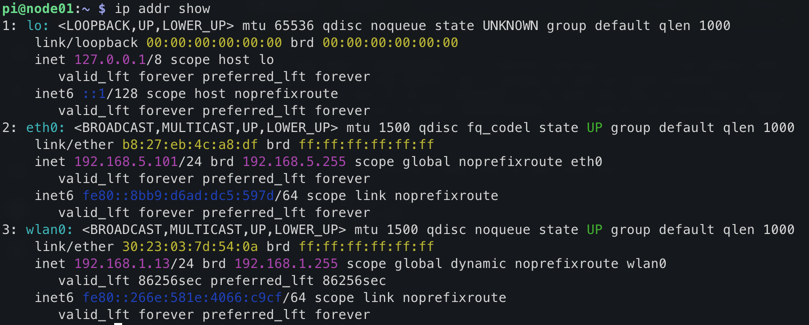
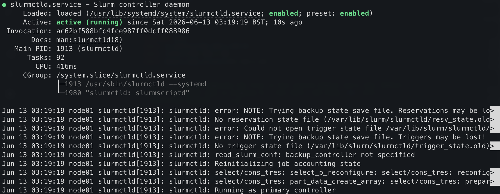

Configuring the login node
Last updated on 2026-06-19 | Edit this page
Overview
Questions
- What roles does the login node play in an HPC cluster?
- How does a login node provide network access to compute nodes?
Objectives
- Configure the login node as a NAT gateway using iptables
- Assign a static IP address to the ethernet interface using
nmcli - Configure dnsmasq to provide DHCP and DNS to the cluster network
- Set up NFS to export shared filesystems to compute nodes
- Configure munge authentication
- Install and configure Slurm on the login node
- Install EESSI for a shared software environment
Configure the login node first
The compute node configuration (next page) depends on files generated here (munge key, slurm.conf, /etc/hosts), and the login node must be up and running as the DHCP/DNS server before the compute node can reach the network.
Tutorial design
We won’t configure a separate control node in this tutorial: the login node will act as the SLURM controller, the NFS backing filesystem, and the cluster’s internet gateway, too. In a production cluster these would typically be separate machines, but combining them means we can demonstrate all the techniques using just two nodes. We’ll also leave multi-user systems and authentication (Kerberos, LDAP and friends) as an exercise to the reader.
In this section, we will configure our login node. This is the node through which we will interface with our cluster.
Check the hostname (and fix if required)
Check your hostname first
Hostname resolution must be in place before running any
sudo command, otherwise every sudo invocation
will print unable to resolve host node01.
Back in section 3, we configured the hostname for the node in the
imaging tool. It’s worth checking the hostname is set correctly: your
login node should end 01, and your compute node
02.
It is important that the hostname is correct. If you need to modify it, run:
Then use the arrow keys and “Enter” to select “01 System Options” then “S4 Hostname”. Enter your corrected hostname and apply changes.
You can alternately accomplish this by editing
/etc/hostname. However, on Debian Bookworm (modern
Raspberry Pi OS), cloud-init manages this file and your
change will be lost on reboot. You can tell it to respect your changes
by setting preserve_hostname to true:
Start with an update
Install required packages
This command will install the required packages (and some suggested ones we like to have on hand) onto your Pi:
BASH
sudo apt-get install -y nfs-kernel-server nfs-common slurm slurm-wlm munge \
libmunge-dev libmunge2 iptables iptables-persistent dnsmasq libopenmpi-dev \
libopenmpi40 lmod build-essential python3-pip net-tools bind9-dnsutils \
ansible nmap git htop screen vim Be careful when copying this command that you don’t introduce any
trailing spaces after the / symbol. This tells bash that
the command continues on the next line, but it won’t work if there’s
whitespace after it.
A dialog block will appear on the screen. Answer yes to both questions.
Package versions and compatibility
On older Raspberry Pi OS releases, libpmix2,
libpmix-bin, and libpmix-dev were separate
packages. PMIx packages were merged into OpenMPI in Debian Bookworm: use
libopenmpi40 and libopenmpi-dev instead.
If libopenmpi40 isn’t available, try
libopenmpi3t64 instead. You’ll know you hit this issue if
you see: E: Unable to locate package libopenmpi40. We have
noticed that on older Pis (1B, 2B), only the legacy OpenMPI package is
installable: this is because these use 32-bit armhf
CPUs.
| Package | Purpose |
|---|---|
nfs-kernel-server |
NFS server: exports the shared filesystem to compute nodes |
nfs-common |
NFS client utilities, also needed on the login node |
slurm slurm-wlm
|
Slurm workload manager: schedules and dispatches jobs across the cluster |
munge |
Authentication service used by Slurm daemons to verify messages |
libmunge2 libmunge-dev
|
MUNGE shared library and development headers |
iptables iptables-persistent
|
Firewall and NAT rules: persistent saves them across reboots |
dnsmasq |
Lightweight DHCP and DNS server: assigns IPs to compute nodes |
libopenmpi-dev libopenmpi40
|
OpenMPI runtime and headers: provides PMIx support for Slurm job launch |
python3-pip |
Python package installer |
lmod |
Lua-based module system for managing software environments (e.g. EESSI) |
build-essential |
Compilers and build tools (gcc, make,
etc.) |
net-tools |
Legacy networking tools (ifconfig,
netstat, etc.) |
bind9-dnsutils |
DNS utilities (dig, nslookup): useful for
verifying DNS resolution |
ansible |
Automation tool for configuring compute nodes in bulk |
nmap |
Network scanner: useful for verifying compute nodes are reachable |
git |
Version control |
htop |
Interactive process viewer |
screen |
Terminal multiplexer: keeps sessions alive over SSH |
vim |
Text editor |
Now, we can remove any redundant packages left over after our upgrades and package installations:
This stage can take quite a long time on older hardware (Pi 2Bs or Pi 3s, for instance). The hardware in the workshop uses Raspberry Pi 5s, so shouldn’t keep you waiting too long.
Set up cluster networking
Compute clusters are usually set up so that users cannot access compute nodes directly from the public internet. We’ll do that too. Our login node’s WiFi connection will be used as the gateway to the world, and we’ll later disable WiFi on our compute nodes. This means that our login node is also acting as a router / internet gateway for the purposes of our tutorial.
Alternative uplink interfaces
We don’t have to use wlan0 for this: we could connect a
USB Ethernet dongle and use eth1 as our upstream link
instead. In any case, the concept to demonstrate here is that our
compute nodes are physically isolated from HPC users at a network
level.
Enable IP forwarding
By default, Linux drops packets that arrive on one interface but are destined for another network. Enabling IP forwarding tells the kernel to route those packets instead of discarding them.
Create a drop-in configuration file so the system setting is not mixed with distribution defaults:
sudo sysctl --system applies all drop-in files
immediately, so a reboot is not required.
Configure IP-tables
We will configure NAT masquerading to control the network topology of our cluster.
BASH
sudo iptables -t nat -A POSTROUTING -o wlan0 -j MASQUERADE
sudo iptables -A FORWARD -i eth0 -o wlan0 -j ACCEPT
sudo iptables -A FORWARD -i wlan0 -o eth0 -m state --state RELATED,ESTABLISHED -j ACCEPT
sudo netfilter-persistent saveHere’s what each rule does:
sudo iptables -t nat -A POSTROUTING -o wlan0 -j MASQUERADE
This is NAT masquerading. Packets leaving via wlan0 (the
upstream internet interface) have their source IP rewritten to the login
node’s wlan0 address. This lets compute nodes reach the
internet via eth0 on the login node: their traffic appears
to come from the login node.
sudo iptables -A FORWARD -i eth0 -o wlan0 -j ACCEPT
Allows packets to be forwarded from eth0 (the cluster
network) out to wlan0 (internet). Without this, the kernel
would drop traffic trying to cross interfaces even if IP forwarding is
enabled in sysctl.
sudo iptables -A FORWARD -i wlan0 -o eth0 -m state --state RELATED,ESTABLISHED -j ACCEPT
The return-traffic rule. Allows packets coming back from the internet
(wlan0) into the cluster (eth0), but only for
connections that were already established or are related to an existing
connection (e.g. FTP data channels). New inbound connections from the
internet are dropped.
Together, these three rules implement a basic NAT gateway: compute nodes can reach the internet through the login node, but the internet cannot initiate connections into the cluster.
Configure the network interfaces
Do not edit /etc/network/interfaces on
current Raspberry Pi OS (Bookworm). That file is not used when
NetworkManager is active, and mixing the two causes unpredictable
behaviour. Use nmcli instead.
The login node needs a fixed IP on its ethernet
interface (eth0) so the compute nodes always reach it at
the same address, and so dnsmasq can hand out leases reliably. Ethernet
interfaces must be set to “unmanaged” in the sense that they carry a
static address rather than requesting one via DHCP: NetworkManager still
controls the interface, but DHCP is disabled for it.
BASH
sudo nmcli con add type ethernet ifname eth0 con-name eth0-static \
ipv4.method manual \
ipv4.addresses 192.168.5.101/24 \
ipv4.dns 192.168.5.101 \
connection.autoconnect yes
sudo nmcli con up eth0-staticNeed to reverse this for any reason?
sudo nmcli con delete eth0-static removes the static
connection and returns eth0 to DHCP.
Previous versions of this tutorial used eth0 as the
gateway interface, routing outgoing traffic back over
192.168.5.101. This has been updated to use
wlan0 so that the cluster network can reach the internet.
As such, we don’t set an ipv4.gateway on this
connection.
Verify the address is set:
You should see a static address of 192.168.5.101
assigned to eth0. Your SSH connection to the Pi is running
through wlan0 at this point:

How to modify the hostname (if required!)
If you followed section 2 correctly, your hostname will already be set. However, if you need to modify it for any reason, you can do so with the following command:
This hostname must match the value used in the
config files below, particularly /etc/hosts and
/etc/slurm/slurm.conf. Take extra care when editing these
files that they match the values for your login and compute node
hostnames.
Configure DHCP
Configure dhcp by entering the following in the file
/etc/dhcpd.conf
BASH
interface eth0
static ip_address=192.168.5.101/24
static routers=192.168.5.101
static domain_name_servers=192.168.5.101Tip
You can populate the files in this section however you’d like.
However, one of the easier patterns is using heredocs with
sudo tee filename, e.g.:
Make sure you replace somefile.conf with the file you’re
trying to write.
Don’t just copy-paste this block: it’s here to help you understand the method. You may find it helpful to use a text editor to help you prepare these commands before pasting them in.
Configure DNS masquerading
First, retrieve the ethernet MAC address of your compute node. If it is already on the network over WiFi, you can do this from the login node, or from your laptop:
Look for the link/ether line: the MAC address is the six
colon-separated hex pairs, e.g. b8:27:eb:6e:7d:6d.
Now configure dnsmasq by entering the following in
/etc/dnsmasq.conf, substituting your compute node’s MAC
address into the dhcp-host line:
BASH
interface=eth0
bind-dynamic
domain-needed
bogus-priv
dhcp-range=192.168.5.102,192.168.5.200,255.255.255.0,12h
dhcp-option=3,192.168.5.101 # default route (the login node)
dhcp-option=6,192.168.5.101 # DNS server
dhcp-host=b8:27:eb:6e:7d:6d,192.168.5.102 # compute node assignmentDon’t copy-and-paste this block without altering it to match your MAC address!
Restart dnsmasq to apply the config:
Verify it is now listening on the DHCP port:
You should see dnsmasq bound to port 67.
Configure NFS
Next we want to configure some shared filesystem space that all nodes can access.
First we’ll create a shared directory on our login node, which here is acting as our backing filestore. This would be a separate filesystem server in reality, using an HPC-class filesystem like Lustre.
Configure shared drives by adding the following at the end of the
file /etc/exports
BASH
/sharedfs 192.168.5.0/24(rw,sync,no_root_squash,no_subtree_check)
/home 192.168.5.0/24(rw,sync,no_root_squash,no_subtree_check)Then apply the exports:
You should see both /sharedfs and /home
listed. We don’t need to restart the NFS service here.
Configure hosts file
On current Debian (Bookworm and later), cloud-init manages
/etc/hosts and will overwrite direct edits on reboot. Edit
the template instead:
/etc/cloud/templates/hosts.debian.tmpl.
dnsmasq reads the login node’s /etc/hosts
and serves those entries as DNS to all cluster nodes, so this is the
only place you need to maintain hostname-to-IP mappings for the cluster.
Compute nodes will receive the login node’s address as their DNS server
via DHCP.
The template already contains entries to create this node’s hostname.
Append the cluster IP entries below it. Add the following to
/etc/cloud/templates/hosts.debian.tmpl, substituting your
cluster name:
Don’t copy-and-paste this block without altering it to match your
cluster name! (orange, black,
green, blue, etc.).
Now we can apply the template to /etc/hosts immediately,
then reload dnsmasq so it picks up the new entries:
Configure munge
Munge is the authentication service we’ll be using in our Pi HPC cluster. We need to do some configuration here first.
Create the munge key using the mungekey tool, which
handles size and permissions correctly:
Verify ownership and permissions:
The key must be owned by the munge user with mode
0400 (readable only by its owner). The output should look
like this:
OUTPUT
-r-------- 1 munge munge 1024 Jun 16 10:00 /etc/munge/munge.keyIf the owner is root (which can happen if
mungekey was run as root after deleting a pre-existing
key), fix it with:
Do not regenerate the munge key on the login node once compute nodes are configured
If you delete and recreate /etc/munge/munge.key on the
login node after distributing it to compute nodes, the keys will no
longer match and SLURM will fail to authenticate between nodes. To
recover, redistribute the new key to all compute nodes and restart
munge everywhere.
Configure Slurm
Add the following to /etc/slurm/slurm.conf. Again,
change all occurences of pixie in this script to
the name of your cluster. We use a two-digit node identifier
here (pixieNN) for simplicity but SLURM can easily be
configured to use more.
CONF
SlurmctldHost=pixie01(192.168.5.101)
MpiDefault=none
ProctrackType=proctrack/cgroup
#ProctrackType=proctrack/linuxproc
ReturnToService=1
SlurmctldPidFile=/run/slurmctld.pid
SlurmctldPort=6817
SlurmdPidFile=/run/slurmd.pid
SlurmdPort=6818
SlurmdSpoolDir=/var/lib/slurm/slurmd
SlurmUser=slurm
StateSaveLocation=/var/lib/slurm/slurmctld
SwitchType=switch/none
TaskPlugin=task/affinity
InactiveLimit=0
KillWait=30
MinJobAge=300
SlurmctldTimeout=120
SlurmdTimeout=300
Waittime=0
SchedulerType=sched/backfill
SelectType=select/cons_tres
SelectTypeParameters=CR_Core
AccountingStorageType=accounting_storage/none
# AccountingStoreJobComment=YES
AccountingStoreFlags=job_comment
ClusterName=pixie
JobCompType=jobcomp/none
JobAcctGatherFrequency=30
JobAcctGatherType=jobacct_gather/none
SlurmctldDebug=info
SlurmctldLogFile=/var/log/slurm/slurmctld.log
SlurmdDebug=info
SlurmdLogFile=/var/log/slurm/slurmd.log
PartitionName=pixiecluster Nodes=pixie[02-02] Default=YES MaxTime=INFINITE State=UP
RebootProgram=/etc/slurm/slurmreboot.sh
NodeName=pixie01 NodeAddr=192.168.5.101 CPUs=4 State=IDLE
NodeName=pixie02 NodeAddr=192.168.5.102 CPUs=4 State=IDLEYou’re starting to get used to this warning, but please, don’t copy-and-paste this block without altering it to match your hostname!
Adapting for mixed hardware at home
If you’re trying this at home with a mixed bag of hardware, bear in
mind that only Pi 3 and later run a 64-bit OS. Pi 1Bs (ARMv6) and most
Pi 2Bs (ARMv7) are 32-bit and can run slurmd but can’t use
EESSI. Slurm has features to work around this: NodeName
entries accept a Feature= tag
(e.g. Feature=64bit). Jobs can then request specific node
types with --constraint=64bit, ensuring they are routed to
capable nodes.
Next, restart slurm:
slurmd must be restarted after the config is in place.
It is installed earlier but will be in a failed state until now. Munge
must be started first as both daemons depend on it.
At this point, you should see Slurm running if you check using
sudo systemctl status slurmctld:

Install EESSI
BASH
mkdir eessi
cd eessi
wget https://raw.githubusercontent.com/EESSI/eessi-demo/main/scripts/install_cvmfs_eessi.sh
sudo bash ./install_cvmfs_eessi.sh
source /cvmfs/software.eessi.io/versions/2023.06/init/lmod/bashOnly Pi 3 and later are supported by EESSI, as it requires a 64-bit OS.
What we learned
We have now configured the login node from a fresh Raspberry Pi OS install into a functioning HPC head node.
- Updated packages and installed the software stack needed to run a cluster
- Configured the login node as a NAT gateway, using iptables to allow
compute nodes to reach the internet through
wlan0while keeping them hidden from inbound connections - Assigned a static IP (
192.168.5.101) toeth0and configured dnsmasq to serve DHCP and DNS to compute nodes on the192.168.5.0/24subnet - Exported a shared
/homefilesystem over NFS so compute nodes can access user files without copying them - Configured munge so that Slurm daemons on the login and compute nodes can authenticate each other
- Installed and configured Slurm (
slurmctld) to schedule jobs across the cluster - Installed EESSI to provide a shared, architecture-aware software environment
In the next section, we’ll configure a compute node to perform computational work.
- The login node acts as NAT gateway, DHCP/DNS server (dnsmasq), NFS server, and Slurm controller
- iptables NAT masquerading allows compute nodes to reach the internet through the login node’s WiFi
- munge provides authentication between Slurm daemons; all nodes must share the same munge key
- EESSI provides a shared, architecture-aware software environment accessible from all nodes